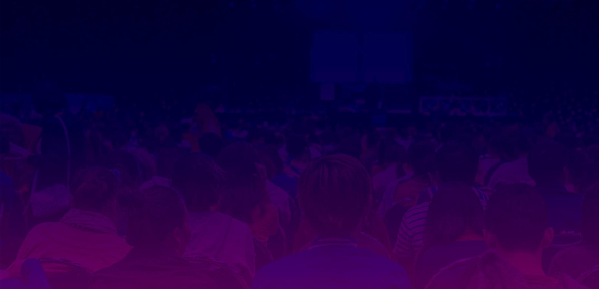
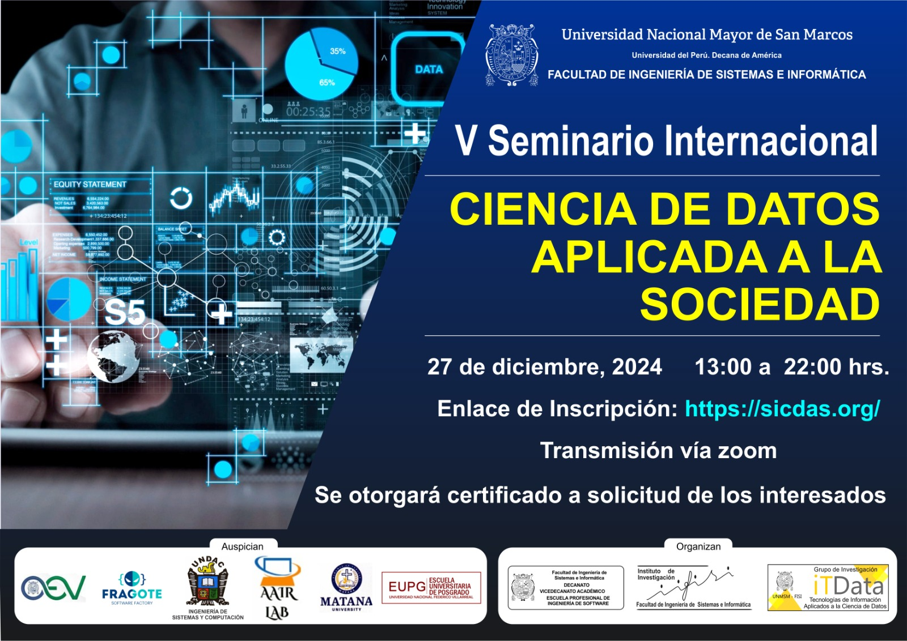
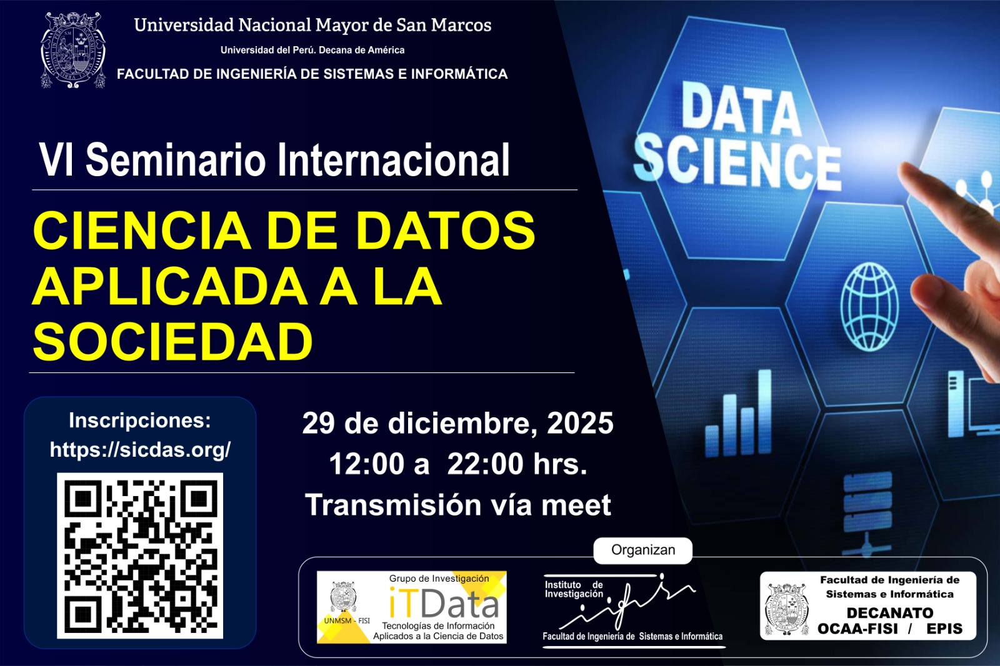
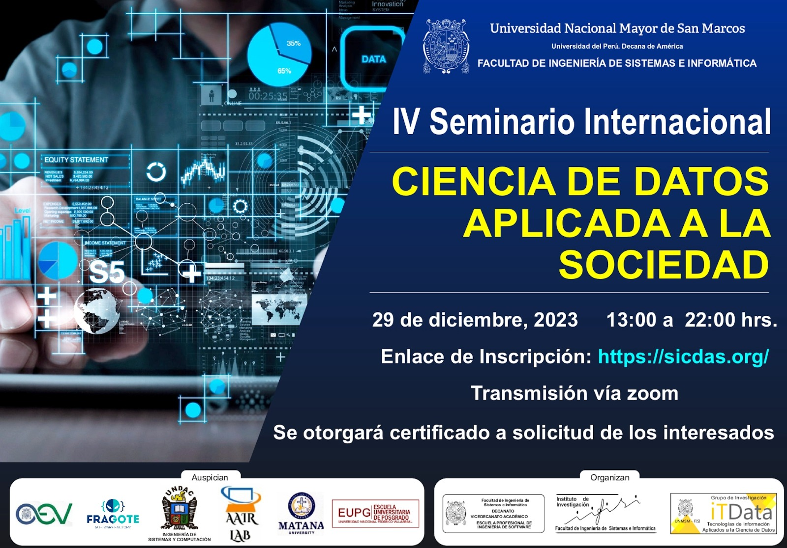

El Grupo de Investigación ITDATA, el Decanato, el Vicedecanato Académico y el Instituto de Investigación de la Facultad de Ingeniería de Sistemas e Informática (FISI) de la Universidad Nacional Mayor de San Marcos (UNMSM) se complacen en presentar la organización del VII Seminario Internacional de Ciencia de Datos Aplicada a la Sociedad (SICDAS).
Su propósito es fomentar y fortalecer el intercambio de experiencias académicas e investigativas entre profesionales y estudiantes de Ingeniería de Sistemas, Ingeniería de Software, Computación e Informática, así como con todos los participantes interesados.
El SICDAS aborda Big Data Analytics, Machine Learning, Data Mining, Business Intelligence, Data Science, Open Data, Gobierno de Datos y Deep Learning, con enfoque en su aplicación a los desafíos sociales. Habrá conferencias, una mesa redonda, intercambio de ideas y experiencias, y certificados para los interesados.
Investigadores y profesionales nacionales e internacionales compartirán experiencias y aplicaciones reales de la ciencia de datos frente a los desafíos sociales. Pronto anunciaremos a los ponentes confirmados.
Programa tentativo del domingo 27 de diciembre de 2026, de 12:00 a 22:00 (hora de Perú, GMT-5). Los temas y horarios se confirmarán más adelante.
Grupo de Investigación ITDATA, Decanato, Vicedecanato Académico e Instituto de Investigación de la Facultad de Ingeniería de Sistemas e Informática (FISI) de la Universidad Nacional Mayor de San Marcos.
Profesionales y estudiantes de Ingeniería de Sistemas, Ingeniería de Software, Computación e Informática, y todas las personas interesadas en la ciencia de datos.
El evento es virtual. Publicaremos el enlace de Google Meet y la retransmisión en YouTube antes del 27 de diciembre.
Sí. Se otorgarán certificados a los interesados que completen el registro para certificado.
Muy pronto. Síguenos en redes sociales para enterarte cuando se abra el formulario.